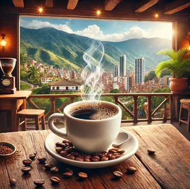
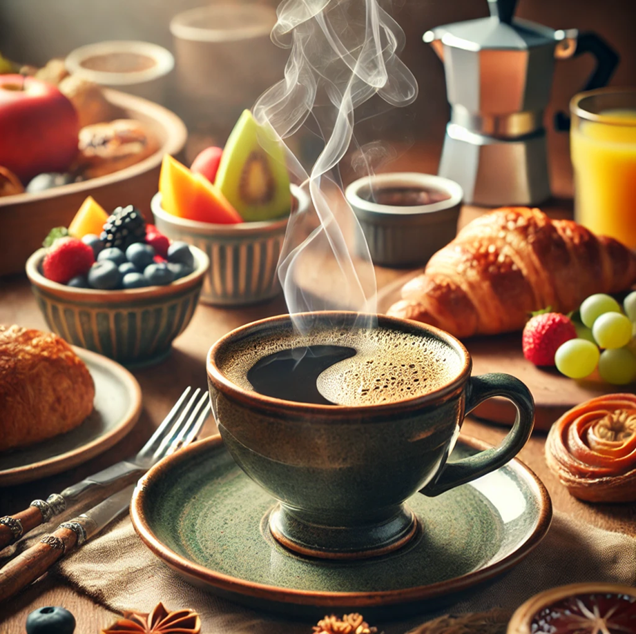
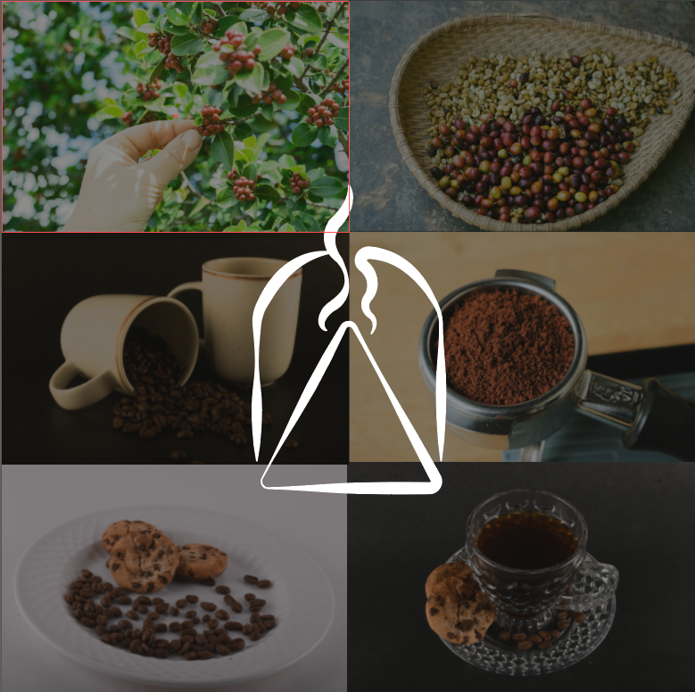
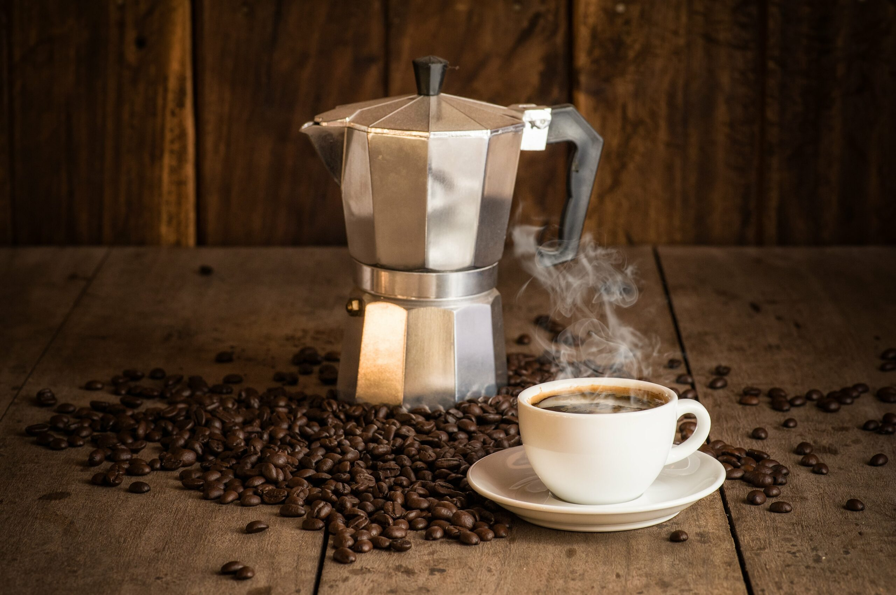

Bienvenido al Blog de Sendero
Explora el fascinante mundo del café 100 % colombiano con nosotros. En este espacio, descubrirás historias, tendencias y secretos detrás de cada grano.
Sumérgete en nuestras publicaciones y déjate llevar por el aroma, la cultura y la pasión que hacen del café una experiencia única. ¡Bienvenido a Sendero!
Noticias Destacadas
El Café 100 % Colombiano en Medellín
Descubre cómo Medellín se ha convertido en un destino clave para los amantes del café.

Brunch en Medellín: Café, Naturaleza y una Experiencia Inolvidable
Conoce la historia y el impacto cultural del café en la identidad colombiana.

El Arte de Cultivar y Producir Café
Un viaje desde el campo hasta el tazón.

El Sabor del Café
Una experiencia sensorial única.
Un Universo de Sabores
Explorando los tipos de café y sus preparaciones.
